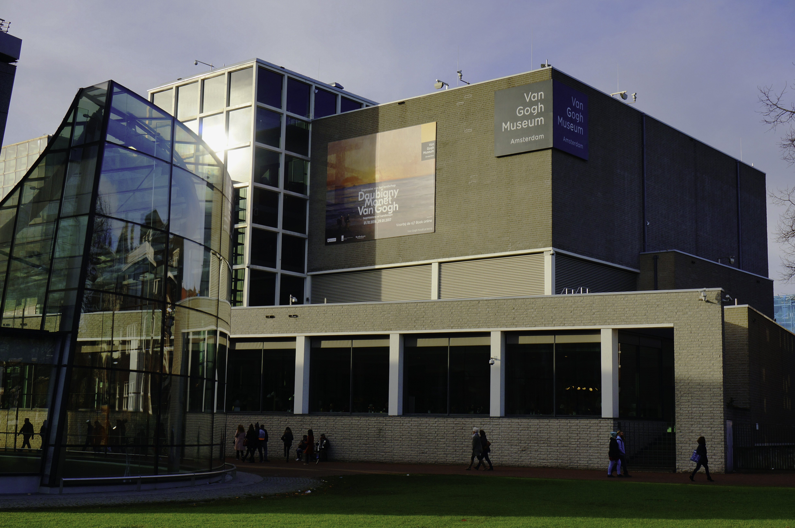
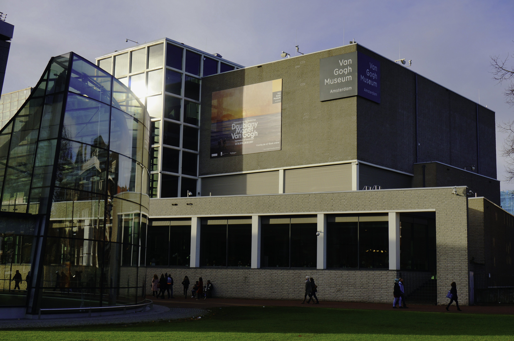

“Life etches itself onto our faces as we grow older, showing our
violence, excesses or kindnesses.”
A prolific painter, draftsman, and etcher, Rembrandt van Rijn is usually regarded as the greatest artist of Holland’s “Golden Age.” Rembrandt became a prominent portraitist, attracting attention with dramatic compositions like The Anatomy Lesson of Dr. Tulp (1632; Mauritshuis, The Hague). The artist became highly successful in the 1630s, when he had several pupils and assistants, started his own art collection, and lived the life of a cultivated gentleman, especially in the impressive residence he purchased in 1639 (now the Rembrandt House Museum).
VisitRembrandt’s House Museum, the place where the Dutch painter Rembrandt
Harmenszoon van Rijn (1606 – 1669) lived between 1639 and 1659, houses
an extensive collection of etchings by the Master, paintings by
artists from whom he drew inspiration and numerous personal objects of
the artist.
The house itself was built in 1606, the year of Rembrandt’s birth in
Leiden. A few years before Rembrandt moved in, it is thought the house
was remodelled by architect Jacob van Campen who designed the Royal
Palace on Dam Square. Rembrandt stayed in the house for 19 turbulent
years producing some of his most famous works including the NightWatch
which can be seen at the Rijksmuseum For a good period Rembrandt
enjoyed great prosperity as an artist and teacher and his studio
produced a significant output of artworks. In total Rembrandt produced
some 300 paintings, 290 etchings and 2,000 drawings over his career.
The Rembrandt House has an almost complete collection of his etchings.
Eventually Rembrandt’s fortunes began to change due to his extravagant
lifestyle and a declining art market. In 1658 after persistent
problems paying off his debts Rembrandt was declared bankrupt.He had
to move to a smaller rented house on Rozengracht.
For around the next 250 years the Rembrandt house had a number of
different occupants before being bought by the city council who turned
it over to a foundation. The house was renovated between 1908 and 1911
and then opened as a museum dedicated to the artist.
In 1998 a modern new wing was added nextdoor and the main house was
restored carefully. The bankruptcy inventory was vital in helping
create an authentic recreation of the home. The museum underwent a
major renovation in 2022-23 adding 30% more exhibition space. The
layout of the house is typical for the period in which it was built,
and its restoration is extraordinarily faithful to the original. Of
great interest to the contemporary visitor are Rembrandt’s bedroom,
with its small bed; his large studio, in which many of his well-known
works were painted, and his cabinet, in which are stored many of the
natural and man-made objects and curiosities that appear in
Rembrandt’s works
The Amsterdam Rembrandt House Museum is a reconstruction of
Rembrandt’s rooms and of his workshop. The furniture and objects from
the epoch are carefully presented together with the prints, sculptures
and a few paintings of other painters from Rembrandt’s time. A
collection of almost all Rembrandt’s prints and the graphic techniques
he used, are also shown.
There are many fun activities you can do at the museum, check out here!